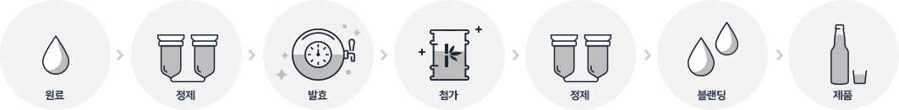
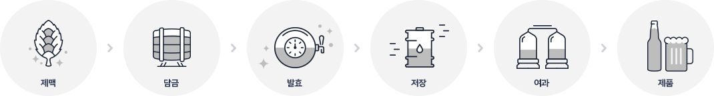

하이트진로 주요서비스
Login
하이트진로 검색
품질경영
품질 최우선 경영에 하이트진로㈜가 앞장서겠습니다.
원료의 선택에서 부터, 공정 하나하나는 물론, 매장에 전달되는 그 순간까지
최고의 맛을 만들고 지키겠다는 하이트진로만의 약속입니다.
-
Q-UP이란? Q-UP은 HITEJINRO Quality UP SYSTEM을 의미하며, 최고의 주류를 공급하기 위한
하이트진로의 남다른 자부심의 상징입니다.
원료의 선택에서부터 공정 하나하나는 물론, 매장에 전달되는 그 순간까지 최고의 맛을 만들고,
지키는 Q-UP 시스템만의 철저한 약속을 만나보세요.원재료의 Quality UP 소주 (참이슬) 쌀, 보리, 고구마, 타피오카, 사탕수수 등에서 발효 증류한 알코올에 핀란드산 결정과당, 토마틴 등
깨끗한 첨가물만으로 사용하여 차원이 다른 깨끗한 소주가 탄생하였습니다.
참이슬은 유럽에서 '건강설탕'이라 불리며, '설탕' 대신 사용되고 있는 감미료인 핀란드산
결정과당과 서아프리카 카템페 열매 검은씨 부분에서 추출한 단백질 감미료인 토마틴 등 깨끗한
첨가물만을 사용하여 생산합니다.
맥주 하이트진로의 맥주는 대부분의 재료를 맥주 관련 선진국 및 자연청정국가로부터 수급합니다. 주요 원재료 수입국가 맥아 : 호주, 캐나다, 스페인 등
홉 : 미국, 독일, 뉴질랜드, 영국 등생산의 Quality UP A.소주 제품 생산과정  b.맥주 제품 생산과정 
-
Fresh 365 Campaign
fresh 365 CAMPAIGN은 2006년부터 업계 최초로 시행해온 하이트진로만의
품질관리 프로그램입니다.
신선한 맥주의 참 맛을 즐길 소비자의 권리를 위해 품질유지기한이 지난 제품은
새 제품으로 교환해 드리는 ‘신선한 캠페인’입니다.
최고의 맛을 즐기는 품질유지기한 품질유지기한이란 최고(上)의 맛(味)을
유지하는 기간을 의미합니다. 주류에 별도의 유통기간이 없어 제조일자만 표기하던 이전 유통방식에서 벗어나 음용 시
가장 맛있다는 기간을 표시하는 품질유지기한을 각 제품의 라벨에 명시하고 있습니다.
품질유지기한은 용기주입년월일로부터 라벨에 명시된 기간까지 입니다.
각 제품별로 품질유지기한이 상이하니 제품 라벨을 꼭 참고하시기 바랍니다.
-
Q-UP Draft Team 소개
HITEJINRO에서 양조한 신선한 맥주를 최상의 상태로 소비자에게
전달하기 위한 생맥주 품질 관리 전담팀입니다.기존의 생맥주 기자재 설치와 수리 중심의 활동뿐만 아니라 소비자들이 신선한 생맥주를 즐길 수 있도록 전국 생맥주 사업장의 품질 및 위생 관리, 생맥주 지식 전달 등의 역할을 수행합니다.
생맥주 관리사 소개
최고의 생맥주를 선사하는 하이트의 생맥주 관리사를 소개합니다.
Q-UP 생맥주 관리사
고객에게 최고의 생맥주를 제공할 수 있도록 최고의 기술과 노하우를 제공합니다.
Q-UP Service Box
정기적인 생맥주 품질 관리를 위해 생맥주 기기 점검 도구를 항상 소지하고 다닙니다.생맥주 관리사 역할
생맥주 관리사는 까다로운 발효와 숙성과정을 거치는 하이트진로의 맥주처럼 체계적인 교육과 관리를 통해 생맥주 관련 전문가로 거듭나며, 충분한 기술과 경험을 습득한 후에 고객 및 매장지원에 투입됩니다.
생맥주 관리사는 생맥주 기기관리뿐만 아니라 맥주의 맛과 품질의 관리부터 매장 운영 및 마케팅까지 다양한 분야를 연구·학습하는 과정을 통해 소비자들에게는 항상 양질의 맥주를 제공하고, 점주들에게는 매장 운영의 든든한 도우미 역할을 하게 됩니다.
생맥주 품질 관리 전달팀
Q-UP 생맥주 관리사